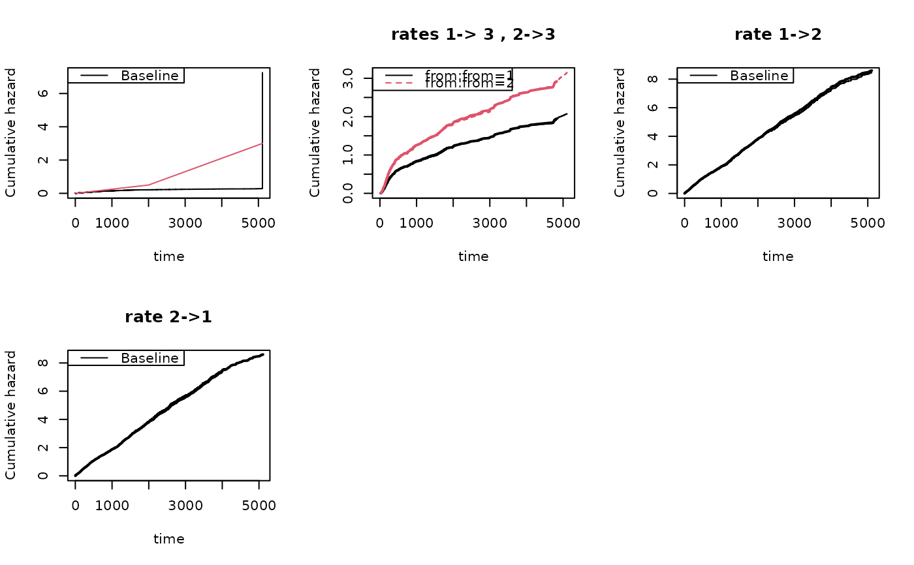

Simulation of illness-death model
Usage
simMultistate(
n,
cumhaz,
cumhaz2,
death.cumhaz,
death.cumhaz2,
rr = NULL,
rr2 = NULL,
rd = NULL,
rd2 = NULL,
rrc = NULL,
gap.time = FALSE,
max.recurrent = 100,
dependence = 0,
var.z = 0.22,
cor.mat = NULL,
cens = NULL,
extend = TRUE,
...
)Arguments
- n
number of id's
- cumhaz
cumulative hazard of going from state 1 to 2.
- cumhaz2
cumulative hazard of going from state 2 to 1.
- death.cumhaz
cumulative hazard of death from state 1.
- death.cumhaz2
cumulative hazard of death from state 2.
- rr
relative risk adjustment for cumhaz
- rr2
relative risk adjustment for cumhaz2
- rd
relative risk adjustment for death.cumhaz
- rd2
relative risk adjustment for death.cumhaz2
- rrc
relative risk adjustment for censoring
- gap.time
if true simulates gap-times with specified cumulative hazard
- max.recurrent
limits number recurrent events to 100
- dependence
0:independence; 1:all share same random effect with variance var.z; 2:random effect exp(normal) with correlation structure from cor.mat; 3:additive gamma distributed random effects, z1= (z11+ z12)/2 such that mean is 1 , z2= (z11^cor.mat(1,2)+ z13)/2, z3= (z12^(cor.mat(2,3)+z13^cor.mat(1,3))/2, with z11 z12 z13 are gamma with mean and variance 1 , first random effect is z1 and for N1 second random effect is z2 and for N2 third random effect is for death
- var.z
variance of random effects
- cor.mat
correlation matrix for var.z variance of random effects
- cens
rate of censoring exponential distribution
- extend
to extend hazards to max-time
- ...
Additional arguments to lower level funtions
Details
simMultistate with different death intensities from states 1 and 2
Must give cumulative hazards on some time-range
Examples
########################################
## getting some rates to mimick
########################################
library(mets)
data(CPH_HPN_CRBSI)
dr <- CPH_HPN_CRBSI$terminal
base1 <- CPH_HPN_CRBSI$crbsi
base4 <- CPH_HPN_CRBSI$mechanical
dr2 <- scalecumhaz(dr,1.5)
cens <- rbind(c(0,0),c(2000,0.5),c(5110,3))
iddata <- simMultistate(100,base1,base1,dr,dr2,cens=cens)
dlist(iddata,.~id|id<3,n=0)
#> id: 1
#> entry time status rr death from to start stop
#> 1 0 170.1568 3 1 1 1 3 0 170.1568
#> ------------------------------------------------------------
#> id: 2
#> entry time status rr death from to start stop
#> 2 0.0000 124.5735 2 1 0 1 2 0.0000 124.5735
#> 101 124.5735 1055.3495 1 1 0 2 1 124.5735 1055.3495
#> 171 1055.3495 1143.6886 3 1 1 1 3 1055.3495 1143.6886
### estimating rates from simulated data
c0 <- phreg(Surv(start,stop,status==0)~+1,iddata)
c3 <- phreg(Surv(start,stop,status==3)~+strata(from),iddata)
c1 <- phreg(Surv(start,stop,status==1)~+1,subset(iddata,from==2))
c2 <- phreg(Surv(start,stop,status==2)~+1,subset(iddata,from==1))
###
par(mfrow=c(2,3))
plot(c0)
lines(cens,col=2)
plot(c3,main="rates 1-> 3 , 2->3")
lines(dr,col=1,lwd=2)
lines(dr2,col=2,lwd=2)
###
plot(c1,main="rate 1->2")
lines(base1,lwd=2)
###
plot(c2,main="rate 2->1")
lines(base1,lwd=2)
